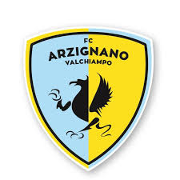

Arzignano

Il Football Club Arzignano Valchiampo S.r.l, meglio noto come Arzignano Valchiampo o Arzignano, è una società calcistica italiana con sede nella città di Arzignano, in provincia di Vicenza. Milita in Serie C, la terza divisione del campionato italiano.
Il sodalizio è nato nel 2011, dopo la fusione del precedente club Garcia Moreno Arzignano con il Chiampo, e si fa portatore della tradizione calcistica cittadina dell'A.C. Arzignano fondato nel 1920.
Nella stagione 2018-2019 ha vinto il girone C di serie D ottenendo la prima promozione della sua storia in Serie C dal 1948. L'anno successivo viene però retrocessa riconquistando la promozione appena due anni dopo, vincendo il girone C della Serie D nella stagione 2021-2022.